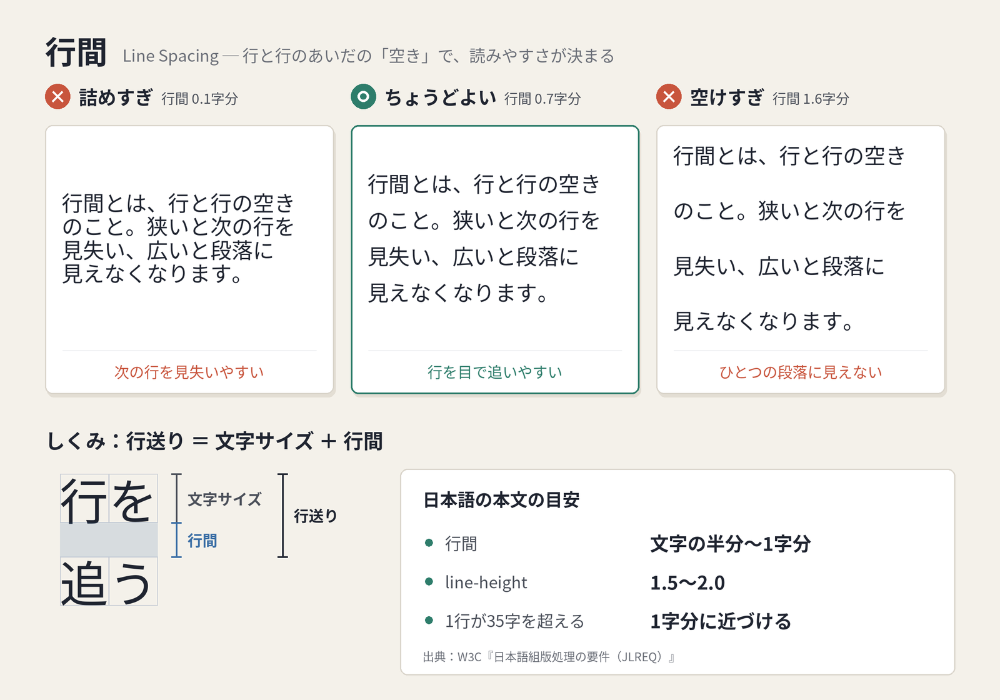

第12回
行間
Line Spacing / Leading

どういう知識か
行間は、行と行のあいだの空きです。似た言葉の行送りは、ある行から次の行までの距離で、「文字サイズ＋行間」になります。CSS の line-height は行送りのほうを指定します。ソフトによって「行間」と呼んでいるものが違うので、どちらの数字かを確かめます。
W3C の『日本語組版処理の要件（JLREQ）』によると、日本語の本文の行間は、文字サイズの半分（二分アキ）から1字分（全角アキ）にすることが多く、1行が35字を超えるような長い行では、1字分か、それより少し詰めた行間がよいとされています。line-height に直すと、およそ 1.5〜2.0 です。行間にルビや注を入れる場合などを除けば、1字分より広くはしないとも書かれています。
欧文では、Matthew Butterick が行送りを文字サイズの120〜145%にするのが最適としています。数字を比べると、日本語の目安は欧文より広めです。
具体例
悪い例：研究サイトの本文が line-height 1.1。行と行がほとんどくっつき、行末から次の行頭へ目を戻すときに、次の行を見失いやすくなります。反対に、ゆったり見せたくて行間を2字分近く空けると、行がばらばらの帯に見え、ひとつの段落としてまとまりません。
良い例：本文の行間を0.7字分ほど（line-height 1.7）にします。行を目で追いやすく、段落のまとまりも残ります。段落と段落のあいだは、行間よりはっきり広く空けます。
今日から使えるひとこと
研究サイトの CSS で本文の line-height を確かめ、1.4 より小さければ 1.7 前後にしてみてください（1行が35字を超える長い行なら 1.8〜2.0）。スライドでは段落設定の行間を少しずつ広げ、行と行のあいだに文字の半分くらいの空きが見えたところで止めます。
サイトでは、読む人が行送りを文字サイズの1.5倍以上に広げても、文字が切れたり重なったりしないことが WCAG 2.2 の達成基準 1.4.12 で求められています。文字を入れる枠の高さは固定しないでおきましょう。
出典
- 日本語組版処理の要件（Requirements for Japanese Text Layout, JLREQ） https://www.w3.org/TR/jlreq/ 基本版面の行間についての注。行間は二分アキ以上・全角アキ以下が多く、35字を超える行長では全角アキか少し詰める
- Line spacing（Butterick's Practical Typography） https://practicaltypography.com/line-spacing.html 欧文の行送りは文字サイズの120〜145%が最適
- Understanding Success Criterion 1.4.12: Text Spacing（WCAG 2.2） https://www.w3.org/WAI/WCAG22/Understanding/text-spacing.html 行送りを文字サイズの1.5倍以上にしても内容や機能が失われないこと